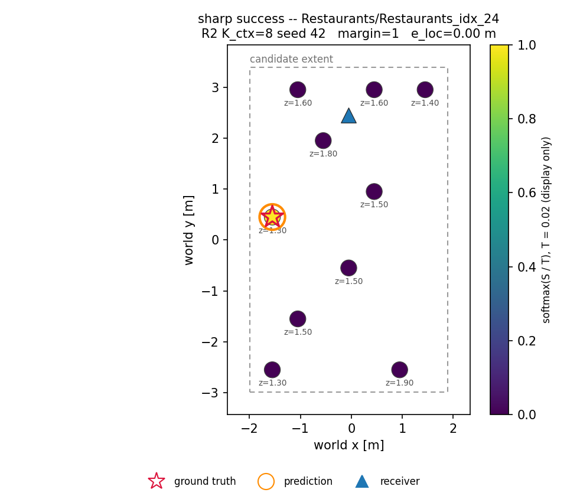
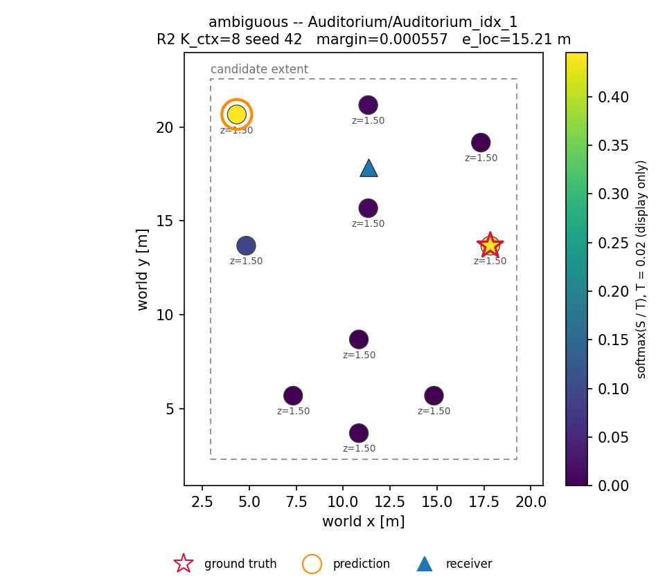
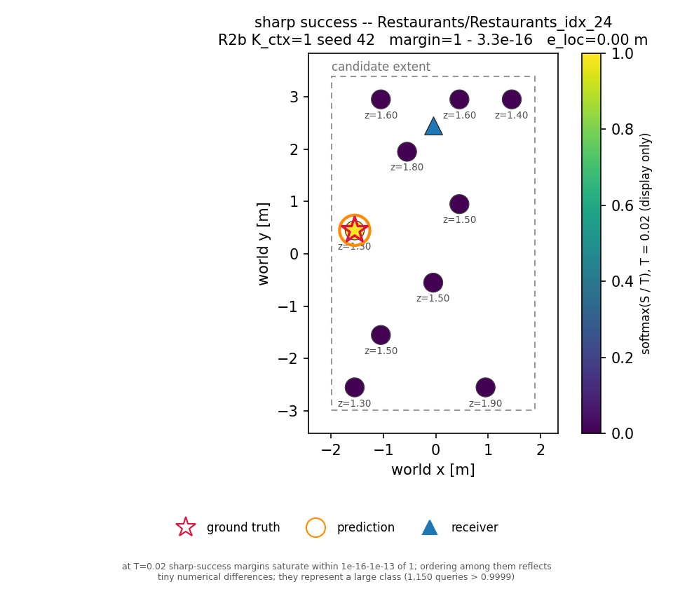
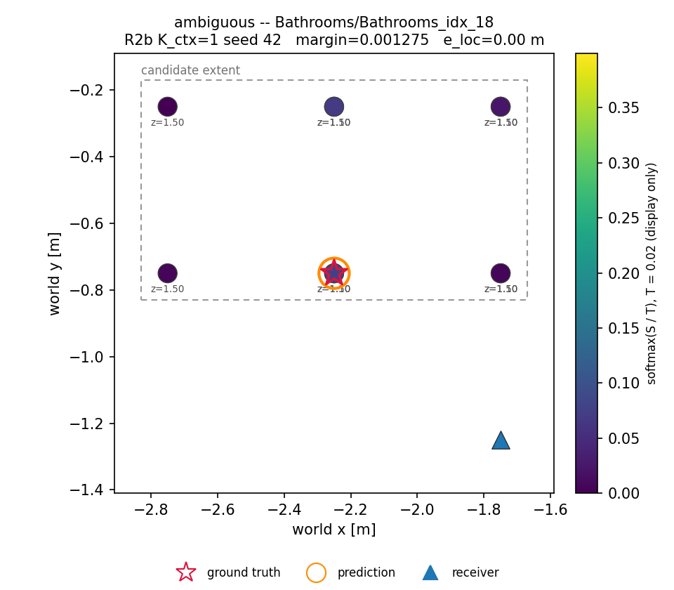
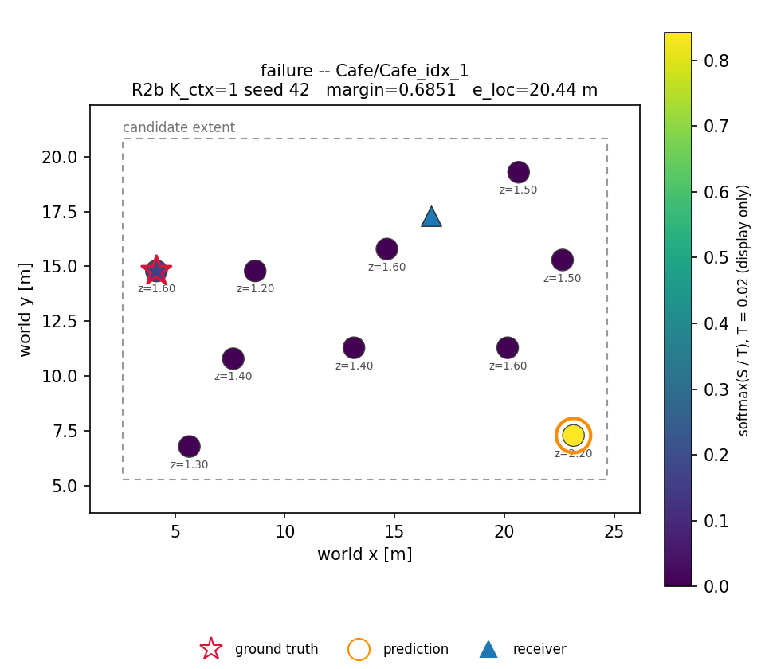

exp_18 — Inverting FLAC for Source Localization
Registered campaign + R4 exploratory scorers · AcousticRooms unseen split, 6,337 queries / 17 rooms / 3 seeds · frozen FLAC_EMA + frozen scorers · branch localization-exp · 2026-08-19 → 08-21
1 · The two-regime result (registered, AGREE scorer)
The generator's information is context-count-invariant; retrieval's collapses without dense coverage. Paired room-clustered tests: FLAC beats chance in both regimes (K=8 p≈0.010; K=1 p≈0); loses to retrieval at K=8, beats it 4.7× at K=1 (p≈0). Seeds 42/43/44 agree within ±0.004 on every metric.
Source: loc_invert_results.md R2/R2b blocks; loc_invert_results_assets/extract_two_regime.json (macro convention, as the 0.689 reference).
2 · R4 — the scorer was half the story
Frozen, seen-calibrated waveform metrics rescore the same generated waveforms (registered replay, sims verified bitwise). The multi-res-STFT scorer lifts inversion from 0.501 to 0.681 macro / 0.724 pooled — a statistical tie with dense retrieval — and cuts the context-member failure mode from 0.376 to 0.239.
| family | pooled top-1 (±SD) | macro | median e | MRR | matched ctl (pooled/macro) | oracle | ctx-member | Holm verdict |
|---|---|---|---|---|---|---|---|---|
| m1 wave residual | 0.6347 ± 0.0006 | 0.5928 | 0.000 | 0.774 | 0.553 / 0.603 | 1.000 | 0.317 | ns |
| m2 multi-res STFT | 0.7240 ± 0.0018 | 0.6806 | 0.000 | 0.839 | 0.611 / 0.665 | 1.000 | 0.239 | +0.113 pooled, ns (rooms split .47) |
| m3 energy decay | 0.3879 ± 0.0019 | 0.3964 | 0.958 | 0.598 | 0.596 / 0.632 | 0.834 | 0.521 | rejected worse (padj=0.000) |
| m4 acoustic params | 0.5310 ± 0.0011 | 0.5056 | 0.000 | 0.708 | 0.605 / 0.644 | 1.000 | 0.401 | ns |
| m5 NCC | 0.5782 ± 0.0016 | 0.5280 | 0.000 | 0.724 | 0.556 / 0.613 | 1.000 | 0.365 | ns |
Source: exp18_R4_report_metrics_report.{json,md} (promoted); extract_families.json. Secondaries (m2_complex, m3_band, m3_hilbert, m5_gcc) and Δ=0 rows in loc_invert_results.md.
3 · Time-of-flight is the load-bearing cue
Too little alignment leaves jitter unabsorbed; too much erases the time-of-flight cue. Corroborated everywhere: the unseen Δ=0 collapse (m1 0.593→0.435, m5 0.528→0.284), arrival-time alone (0.615) beating M4's full feature vector (0.531), and m3's oracle ceiling of 0.834 — decay shape lacks source information even in measured RIRs.
Source: extract_delta.json; exp18_R4_calibrate JSON; R4 report per-feature diagnostics.
4 · The six registered R4 answers
5 · Case gallery (rule-selected, no hand-picking)
Literal per-category extrema under the registered §2.7 rule (r8b-certified). Saturation caveat: at T=0.02 the sharp-success softmax saturates (K8: 1,150 and K1: 1,161 queries above 0.9999) — the picks represent that large class; their ordering reflects ~1e-16 differences. Notably, the K8 worst-error trio is one pathological source: Cafe S009, all at 20.44 m, in both regimes.





Full 18-map gallery + certified manifests in loc_invert_results_assets/ (rule + saturation fields machine-readable).
6 · Why these numbers are trustworthy
- Machine-verified registration on every headline run (full-hex sha, ancestry, byte-identical manifests, locked fields); τ and all metric constants frozen from seen data before any unseen inspection.
- Fail-closed identity gates: 6,337/6,337 in registered order, every seed; split + candidate-manifest digests pinned; atomic publication.
- Generation bit-identical to
eval_FLAC(parity 0.0, M×K, real data); deterministic scorer (sampled-readout noise ≈7e-5 measured and removed); every registered run later bit-reproduced end-to-end (replay verify: all_match over all seeds). - The gates caught three real dataset defects before they could bias anything: a silent-RIR substitution, duplicate-position source labels, and the context-twin leak.
- 14 code rounds, 13 cross-model Codex reviews, 2,684 passing tests; offline aggregation reproduces published numbers to four decimals and the independent oracle pass to six.
- Pred waveforms for every generative cell stored on the NAS (announcement 08), each dump paired with a bitwise sim verification.
Provenance ledger: loc_invert_worklog.md · commands: loc_invert_command.md · reviews: loc_invert_codex_*.md · extract_timeline.json.